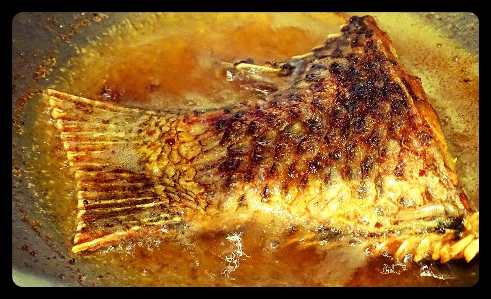
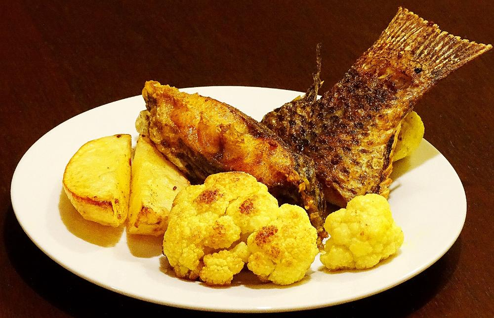
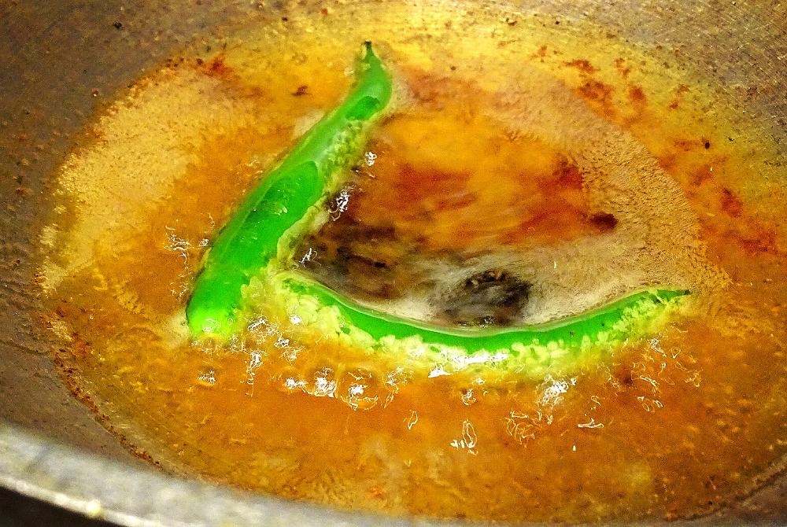
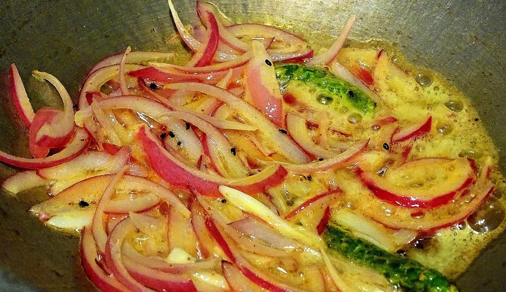
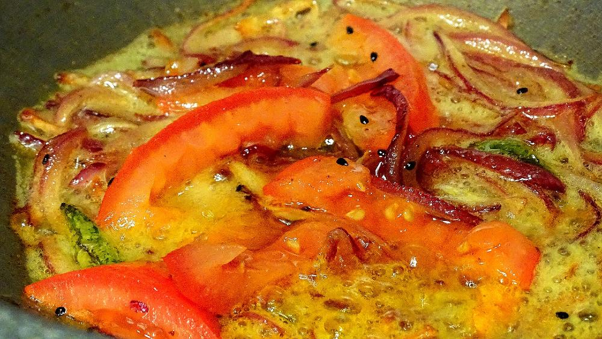
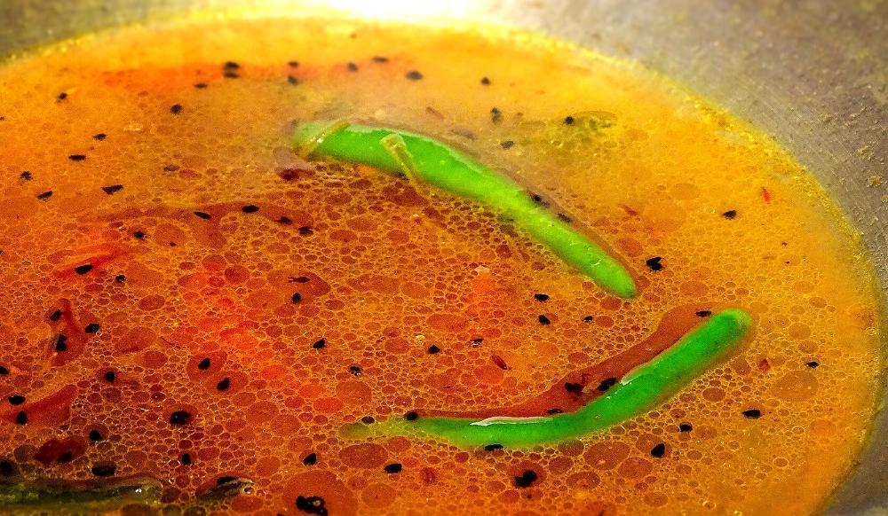
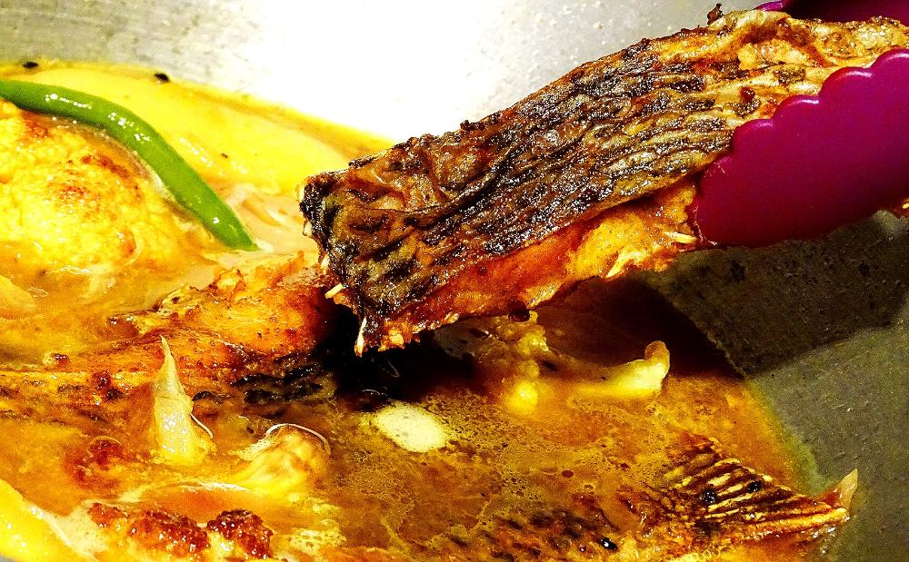

Macher Jhol
Bengalis make various kinds of fish curry with different types of fishes. The most simple and easy one is 'macher jhol' or fish curry. 'Jhol' means runny version of a curry. This dish is usually served as lunch with steamed rice and we all are fan of it. In 'macher jhol' you can use rohu / katla / tilapia / pomfret / pabda etc. One can add many kinds of vegetables like potato, cauliflower, eggplant, green peas, carrot etc. I always make this dish with potato and cauliflower because of 'him'😉. He typically loves this combo. According to me, there is only one restriction about this dish. You have to use 'green chilies' only for the heat and flavour. Try not to use red chili powder or dry red chili because it will make a huge difference. So, here is the recipe how I make 'macher jhol' for my family.

Ingredients
- 4 fish pieces.
- 4 pieces of potato.
- 4-5 pieces of cauliflower.
- Half onion thinly sliced.
- Half tomato chopped.
- 1 Tablespoon nigella seeds (kalojeera).
- 5 green chilies.
- 2 Teaspoons turmeric powder.
- Half Teaspoons roasted cumin powder.
- Salt and sugar.
- Half cup of mustard oil.
- Warm water.

Steps







- Enjoy this with hot plain rice ...